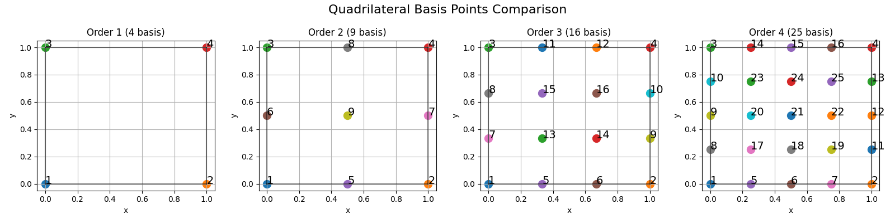
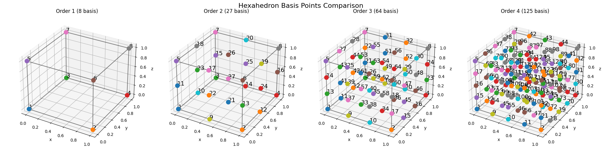
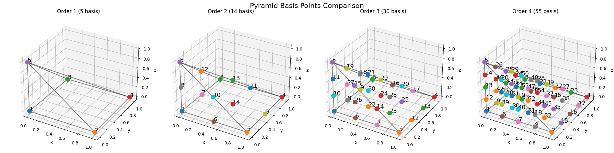
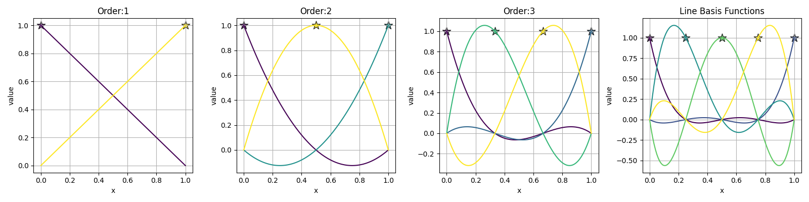
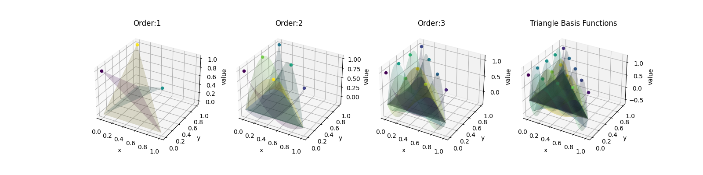
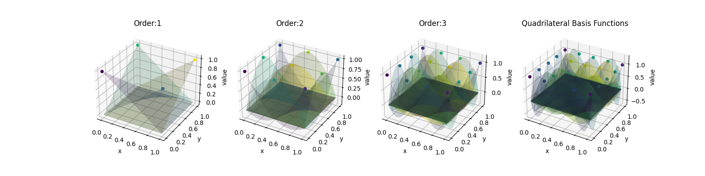
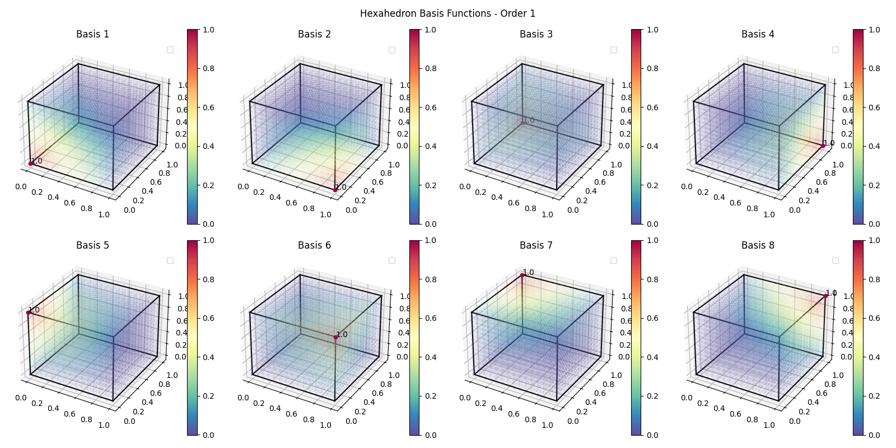
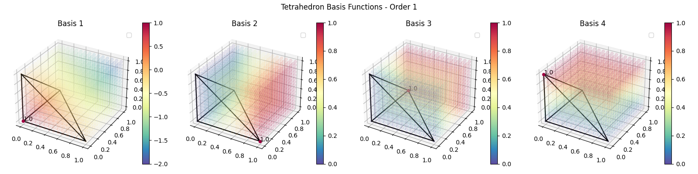
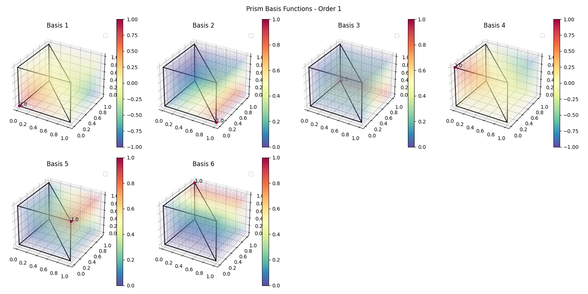
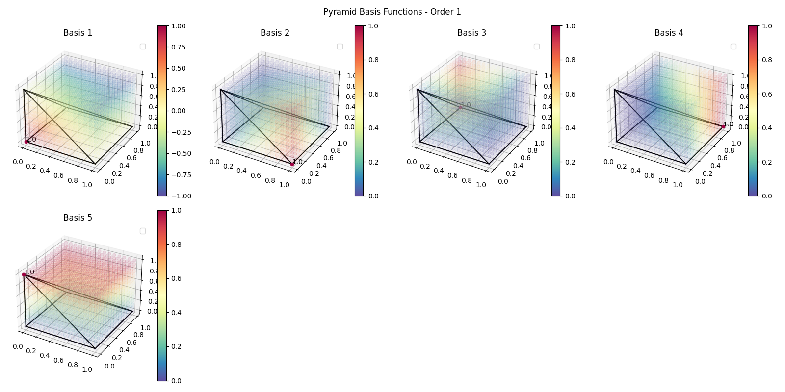

基础与可视化¶
examples/basics/ 中有四个简短脚本，用于可视化 TensorMesh 中有限元方法的基础构件：插值节点在参考单元上的分布位置、形函数的形态、内部节点编号与 Gmsh / VTK 编号的对比，以及网格生成器的产物。这些脚本都不求解偏微分方程——它们的作用是让底层对象变得直观可见，并对库中其他地方使用的约定进行合理性检查。
如果你是在阅读 单元与求积 用户指南页面之后才来到本页，可以把这些脚本当作与之配套的图册。
插值节点¶
examples/basics/basis.py 绘制全部七种单元类——Line、Triangle、Quadrilateral、Tetrahedron、Hexahedron、Pyramid、Prism——在 1 至 4 阶下，参考单元上插值（拉格朗日）节点的空间分布。每个单元类的驱动代码只有一行：
from tensormesh.element import (
Line, Triangle, Quadrilateral,
Tetrahedron, Hexahedron, Pyramid, Prism,
)
for element in [Line, Triangle, Quadrilateral,
Tetrahedron, Hexahedron, Pyramid, Prism]:
for order in range(1, 5):
basis = element.get_basis(order) # [n_basis, dim]
# …scatter basis on the reference element…
基函数节点的数量随阶数迅速增长：张量单元为 \((p+1)^d\)，单纯形单元为 \(\binom{p+d}{d}\)。当高阶求解出现问题时，了解这些节点的位置是首要的合理性检查。
下面七幅图展示了每种受支持单元类在 1–4 阶下的拉格朗日节点布局。每幅图按阶数从左到右排列；节点索引与内部 element.get_basis(order) 的编号一致。

图 19 Line 单元——在 \([0, 1]\) 上的字典序编号。¶

图 20 Triangle 单元——单纯形编号，先排顶点节点，再排边节点，最后排内部节点。¶
{kind=link}

图 21 Quadrilateral 单元——张量积拉格朗日节点。¶

图 22 Tetrahedron 单元——三维单纯形。¶
{kind=link}

图 23 Hexahedron 单元——三维张量积。¶

图 24 Prism（楔形）单元——三角形 \(\times\) 线。¶
{kind=link}

图 25 Pyramid 单元——方形底面，顶点在上方。¶
形函数¶
examples/basics/basis_fn.py 绘制多项式形函数本身。对于一维单元，它们表现为 \([-1,1]\) 上的曲线；对于二维单元，表现为参考三角形或方形上的三维曲面；对于三维单元，每个阶数对应一幅图，并带有一个穿过体积的切片。
该脚本使用 element.get_basis_fns(order)，这与 ElementAssembler 在装配过程中所做的调用相同。如果某个形函数在这里看起来有误，那么它在你装配出的矩阵中同样有误。
原则上 get_basis_fns 接受任意多项式阶数——API 中并未内置硬性上限。下面的图展示了 1–3 阶的一维和二维形函数（外加完整的合成视图），以及 1 阶的三维形函数；更高阶的三维形函数同样可用，这里仅出于篇幅原因略去。
备注
虽然支持任意阶数，但很高的阶数（实际中某些单元类在 \(\geq 4\) 时）是通过范德蒙德（Vandermonde）矩阵求值的，而该矩阵随阶数升高会变得越来越病态。在此情形下脚本可能会打印数值警告。返回的值仍然可用——但如果你在真实求解过程中看到这些警告，请降低阶数或改用其他单元类。对于大多数有限元方法工作负载，1–3 阶是最佳选择。
一维与二维形函数¶
{kind=link}

图 26 1–3 阶的 Line 形函数，以及最高阶的合成视图。星号标记插值节点。¶
{kind=link}

图 27 Triangle 形函数，以参考三角形上的三维曲面形式绘制。¶
{kind=link}

图 28 参考方形上的 Quadrilateral 形函数。¶
三维形函数（1 阶）¶
对于三维单元，脚本为每个单元 / 阶数组合渲染一幅体绘制图；下面仅展示 1 阶的图。运行脚本后，完整集合（包括 2–4 阶）会保存到 examples/basics/output/<element>/<order>.png。
{kind=link}

图 29 Hexahedron 1 阶形函数——八个三线性基函数，每个顶点对应一个。¶
{kind=link}

图 30 Tetrahedron 1 阶形函数——四个重心坐标。¶
{kind=link}

图 31 Prism 1 阶形函数——六个基函数，三棱柱每个顶点对应一个。¶
{kind=link}

图 32 Pyramid 1 阶形函数——五个基函数，每个顶点对应一个。¶
Gmsh / VTK ↔ TensorMesh 节点编号¶
examples/basics/element_gallery.py 将 TensorMesh 的内部节点编号与 Gmsh / VTK 约定并排展示，覆盖 2–4 阶的二维和三维单元。输出为每种单元类型一幅两行图：上一行是 TensorMesh / FEniCS 风格的编号；下一行是 Gmsh / VTK 编号。
网格 中关于 reorder=True 的内容由本脚本提供可视化配套说明：当你加载 Gmsh 的 .msh 文件或通过 meshio 写出 VTU 时，TensorMesh 会施加 element.get_gmsh_permutation(order) 返回的逆置换，从而使内部连接性始终采用同一约定。如果你不确定某个数组采用的是哪种编号，这个脚本能让答案一目了然。
下面展示了四个代表性对比——每个单元族一个。其余单元类型（线、三棱柱、四棱锥）采用相同的两行布局；完整集合位于 examples/basics/output/element_gallery/。

图 33 Triangle——上一行：TensorMesh / FEniCS 编号；下一行：Gmsh / VTK 编号。¶

图 34 Quadrilateral——注意 TensorMesh 的布局是字典序的，而 Gmsh 的 3 阶 / 4 阶四边形布局是沿边界螺旋排列的。¶

图 35 Tetrahedron——顶点 / 边 / 面 / 内部的分组在两种编号下都保持一致，仅各组内的索引有所不同。¶

图 36 Hexahedron——本画廊中差异最大的情形，因为 Gmsh 的六面体编号沿边游走，而 TensorMesh 的是单纯的字典序。¶
网格生成画廊¶
examples/basics/plot_mesh.py 是 TensorMesh 网格工具产物的图册，并附带 tensormesh.visualization 中的几个可视化辅助函数：
内置基元——矩形（三角形和四边形）、立方体（四面体和六面体，后者采用二次基），以及通过
MeshGen生成的单位圆盘。混合网格——矩形一半用三角形剖分，另一半用四边形剖分，并在交界处开了一个圆孔。
mesh.cells是一个以单元类型为键的BufferDict，因此所有装配器会自动遍历这两种单元类型。邻接图——在二维和三维网格上绘制的节点到节点、单元到单元的连接性。可用于调试着色和划分算法（参见 分布式 FEM）。
场可视化——将标量场绘制为节点值（插值到网格上）或逐单元常量。
混合网格的一段代表性代码片段：
import tensormesh as tm
mesh_gen = tm.MeshGen(element_type=None, chara_length=0.1, order=2)
mesh_gen.add_rectangle(0, 0, 0.5, 1, element="tri")
mesh_gen.add_rectangle(0.5, 0, 0.5, 1, element="quad")
mesh_gen.remove_circle(0.5, 0.5, 0.1)
mesh = mesh_gen.gen()
mesh.plot(save_path="output/hybrid_mesh2d.png")
相应的三维脚本使用 dimension=3，并配合 add_cube / remove_sphere 进行 CSG（构造实体几何）操作。

图 37 上面代码片段生成的二维混合网格：左侧为 2 阶三角形，右侧为 2 阶四边形，交界处有一个圆孔。橙色圆点为插值节点（包括 2 阶单元的边中点节点）。¶
运行脚本¶
这四个脚本都可独立运行：
cd examples/basics
python basis.py
python basis_fn.py
python element_gallery.py
python plot_mesh.py
输出保存在 examples/basics/output/ 下——每个脚本生成一张 PNG，对于多单元脚本，则每个（单元，阶数）组合生成一张 PNG。